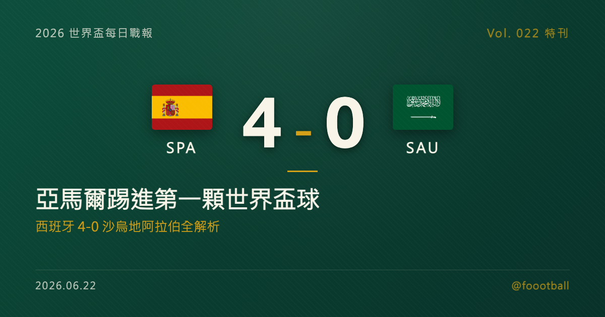

亞馬爾踢進第一顆世界盃球：西班牙 4-0 沙烏地阿拉伯全解析
2026 世界盃 H 組次輪，西班牙在亞特蘭大 4-0 完勝沙烏地阿拉伯。18 歲的亞馬爾第 10 分鐘踢進生涯首顆世界盃進球，奧雅薩巴爾第 21、24 分鐘 3 分鐘內梅開二度，下半場再添一城。西班牙以 4 分、淨勝球 +4 登上 H 組龍頭，末輪對烏拉圭將是頭名之爭。這篇特刊把四顆球、亞馬爾的第一步與西班牙的奪冠成色，逐項拆開來講。

2026 世界盃特刊｜Vol. 022 番外
有些大勝，看的不只是比分，而是一支球隊「終於對上了頻道」的那個瞬間。
2026 年 6 月，在美國亞特蘭大的梅賽德斯-賓士球場，西班牙 4-0 完勝沙烏地阿拉伯。四球零封、半場前就 3-0 鎖定大局，這是一場乾脆俐落的大勝；而它之所以更值得被記住，是因為這一夜屬於一個 18 歲的少年——亞馬爾（Lamine Yamal）在第 10 分鐘踢進了生涯第一顆世界盃進球。對這支衛冕歐洲冠軍、卻在首輪被首航的維德角逼成 0-0 的西班牙而言，這場大勝來得正是時候。
這一夜值得慢慢拆——先拆這四顆球，再拆亞馬爾首球的份量，接著拆奧雅薩巴爾的射手答卷與西班牙的小組賽軌跡，最後，也聊聊這支年輕之師的奪冠成色。
一、四顆球的解剖：上半場就鎖定的大局
西班牙這場勝利的底色，是「開場就掌握主動、半場前就把比賽解決掉」。
第 10 分鐘，第一球——亞馬爾破門，生涯首顆世界盃進球。 比賽才開場十分鐘，西班牙就用熟悉的傳控撕開了沙烏地的防線：邊路與中路的連續傳遞把對手陣型扯動，皮球來到右路的亞馬爾腳下，這位 18 歲的邊鋒切入後完成終結，皮球入網，1-0。對亞馬爾而言，這是他披上西班牙戰袍以來的第一顆世界盃進球——一個早就被全世界期待、如今終於兌現的時刻。這顆球也讓西班牙在最需要破悶的開場階段就卸下了壓力。
第 21 分鐘，第二球——奧雅薩巴爾首開個人帳戶。 領先後的西班牙踢得更從容。第 21 分鐘，西班牙再度由團隊配合創造機會，奧雅薩巴爾（Mikel Oyarzabal）在禁區內捕捉到機會、冷靜推射入網，2-0。
第 24 分鐘，第三球——奧雅薩巴爾梅開二度，3 分鐘內再進一球。 僅僅三分鐘後，奧雅薩巴爾再度出現在正確的位置上，完成個人的梅開二度，把比分改寫為 3-0。短短 3 分鐘內的兩記進球，把比賽從 1-0 一口氣推到 3-0、幾乎在半場前就替西班牙把勝負懸念抹平——這比任何細項紀錄，都更能說明他的終結效率。
第 49 分鐘，第四球——庫庫雷利亞製造，西班牙鎖定大勝。 下半場一開始，西班牙的壓制就再添戰果：第 49 分鐘，庫庫雷利亞（Marc Cucurella）在一次角球進攻後起腳射門，皮球被沙烏地門將撲出後、回彈折射入網（官方記為對手坦巴克蒂的烏龍），4-0。無論記在誰名下，這顆球都是西班牙持續施壓、把對方逼到極限的必然結果。
一記少年的首球、一對 3 分鐘內的梅開二度、一記持續壓迫換來的進球，四顆球串起來，幾乎是一張「傳控強隊如何處理防守型對手」的範本：早進球、控節奏、在上半場就把比賽解決。
二、亞馬爾：第一顆世界盃進球的份量
把鏡頭拉近到亞馬爾，會發現這顆球的意義，遠不只是 1-0。
過去兩年，亞馬爾幾乎是世界足壇最被看好的新生代代表——2024 年歐洲國家盃，他以未滿 17 歲之姿成為賽事最年輕的進球者，幫助西班牙捧起冠軍；俱樂部層級，他也早已是巴塞隆納進攻端的核心拼圖之一。唯獨「世界盃進球」這一欄，在這場比賽之前仍是空白。
而這個空白，在亞特蘭大被填上了。第 10 分鐘的這顆球，是亞馬爾生涯第一顆世界盃進球——據多家媒體統計，他也成為世界盃史上相當年輕的「比賽首開紀錄者」之一。對一名 18 歲的球員而言，能在世界盃這樣的舞台上、在球隊最需要破悶的時刻挺身而出，本身就是一種成熟的訊號。
更重要的是，這顆球給西班牙帶來的，是一份「年輕核心扛得起場面」的安全感。世界盃的賽程漫長、強度逐輪升高，當一支球隊知道自己的進攻端有一個能在大場面挺身而出的少年時，整體的戰術想像空間也隨之打開。亞馬爾的這第一步，很可能只是個開始。
三、奧雅薩巴爾：3 分鐘梅開二度的射手答卷
如果說亞馬爾是這一夜的話題，那奧雅薩巴爾就是這一夜的效率擔當。
對任何一支志在走遠的球隊而言，「鋒線能不能穩定把機會轉化成進球」往往是衝擊力的天花板。奧雅薩巴爾本場第 21、24 分鐘的這對進球，恰好展示了一名頂級射手最珍貴的能力——在對的時間出現在對的位置，並且一擊必中。3 分鐘內連入兩球，靠的不是運氣，而是嗅覺與冷靜。
熟悉西班牙的球迷不會對這一幕陌生：正是奧雅薩巴爾，在 2024 年歐洲國家盃決賽中攻入絕殺英格蘭的致勝球，替西班牙鎖定歐洲冠軍。從歐國盃決賽的一錘定音，到世界盃小組賽的 3 分鐘梅開二度，他一次又一次證明自己是那種「關鍵時刻交得出貨」的射手。
對主帥而言，這對進球帶來的是一份難得的從容。世界盃的小組賽末輪與淘汰賽接踵而來，輪換與體能都要精打細算；而當球隊知道前場有一個能穩定終結的支點時，整體的戰術安排就多了一層底氣。對西班牙這支以傳控、團隊見長的球隊而言，一個狀態正佳的射手，是把「踢得好看」轉化成「贏得乾脆」的關鍵拼圖。
四、從逼平維德角到完勝沙烏地：西班牙的小組賽軌跡
要看懂這場 4-0 的份量，得把鏡頭倒回首輪。
首輪面對世界盃首次參賽的維德角，西班牙踢出了一場令人意外的 0-0。那場球，西班牙握有大量球權與機會，卻始終攻不破對手由門將領銜的密集防線，最終只能帶走 1 分。對一支奪冠熱門而言，那是一記不大不小的警鐘——它提醒人們，再華麗的傳控，若缺乏臨門一腳的效率，也可能在小球隊的鐵桶陣前栽跟頭。
而次輪對沙烏地，則是另一種考題：面對同樣以防守為重的對手，西班牙能不能避免重蹈「控而不破」的覆轍，乾脆地拿下三分？答案是肯定的。從首輪 0-0 的悶局，到次輪 4-0 的酣暢，西班牙走出了一條漂亮的修正曲線——把上一場欠缺的效率，在這一場連本帶利地補了回來。
H 組的出線算盤。 兩輪戰罷，H 組的形勢逐漸清晰。西班牙以 4 分、淨勝球 +4 獨自領跑；烏拉圭與維德角各拿兩和、同積 2 分，靠進球數分先後；沙烏地兩戰僅 1 分墊底。這意味著末輪將是一場多線並進的好戲：西班牙對上烏拉圭——這既是頭名之爭，西班牙只要不輸就大機會鎖定小組第一；而烏拉圭若取勝，則能直接反超、改寫整組的晉級格局。同一時間，維德角對上沙烏地，是維德角搶下隊史世界盃首勝、甚至叩關淘汰賽的機會。對西班牙來說，把命運握在自己腳下的感覺，再好不過。
五、西班牙的奪冠成色：傳控底蘊 + 新生代衝擊
把視野拉得更遠一點，會發現這支西班牙想要的，恐怕遠不只是「小組出線」這四個字。
作為 2024 年歐洲國家盃的衛冕冠軍，這支西班牙帶著「大賽冠軍」的底氣來到美加墨。它的根基，依舊是那套讓全世界又愛又恨的傳控足球——透過綿密的短傳與跑位，把對手一點一點扯動、再尋找致命一擊。但與過去不同的是，這一代西班牙在傳控的底蘊之外，多了一層新生代的銳利：亞馬爾這樣的少年邊鋒，帶來了過去西班牙陣中相對稀缺的「一對一直接撕裂防線」的能力。
當然，從一場對沙烏地的完勝，到真正叩開冠軍的大門，中間還隔著漫長而險峻的路。一場對沙烏地的大勝，還不足以回答淘汰賽級別的問題；傳控足球的軟肋——面對鐵桶陣時的效率問題——在首輪對維德角時就暴露過一次，真正的試金石，仍是末輪的烏拉圭與其後的淘汰賽。要走到最後，西班牙還得在高強度對抗中，反覆證明自己既能踢得好看、也能贏得務實。但至少在這個夜晚，西班牙把該做的事做對了：對必須拿下的比賽不手軟，把該贏的球乾脆地贏下來，並讓自己的年輕核心在世界盃舞台上踏出了關鍵的第一步。
六、接下來：末輪對烏拉圭的頭名戰
引擎已經發動。對西班牙來說，末輪對烏拉圭的這一戰，才是真正的試金石。
烏拉圭是南美傳統勁旅，兩輪過後雖只拿到 2 分，卻仍牢牢握有出線希望，末輪勢必全力一搏。對西班牙而言，這場球不只關乎能否搶下小組頭名，更關乎以什麼樣的姿態走進淘汰賽——在 48 隊、賽程更長的本屆世界盃，淘汰賽的對位由小組名次決定，以頭名出線，往往能在淘汰賽初期避開另一組的強敵，替後續的征途鋪一條相對平緩的路。
從被維德角逼平，到完勝沙烏地，再到末輪對烏拉圭的頭名戰，西班牙的世界盃才剛剛進入正題。而亞馬爾的第一顆世界盃進球，或許正是這趟旅程最好的開場白。
常見問題
Q：西班牙 4-0 沙烏地，進球都是誰打進的？ A：西班牙四顆球分別由亞馬爾（第 10 分鐘）、奧雅薩巴爾（第 21、24 分鐘，梅開二度）攻入，第四球則來自第 49 分鐘庫庫雷利亞（Marc Cucurella）的射門折射——官方記為對手坦巴克蒂的烏龍。其中亞馬爾這顆是他生涯第一顆世界盃進球。
Q：亞馬爾真的是第一次在世界盃進球嗎？ A：是的。18 歲的亞馬爾雖已在 2024 年歐洲國家盃等大賽進球（並隨西班牙奪冠），但在這場比賽之前，他還沒有世界盃進球。第 10 分鐘這顆，是他生涯第一顆世界盃進球，據多家媒體統計，他也是世界盃史上相當年輕的「比賽首開紀錄者」之一。
Q：西班牙出線了嗎？末輪要對誰？ A：尚未確定。西班牙以 4 分、淨勝球 +4 獨自領跑 H 組，但末輪（美加墨 6/26）要對上同積 2 分、仍有出線希望的烏拉圭——這是一場頭名之爭：西班牙只要不落敗就大機會鎖定小組第一，烏拉圭若取勝則能反超。最終形勢要等末輪才會明朗。
Tags: 世界盃, 2026世界盃, 西班牙, 亞馬爾, 奧雅薩巴爾, 沙烏地阿拉伯